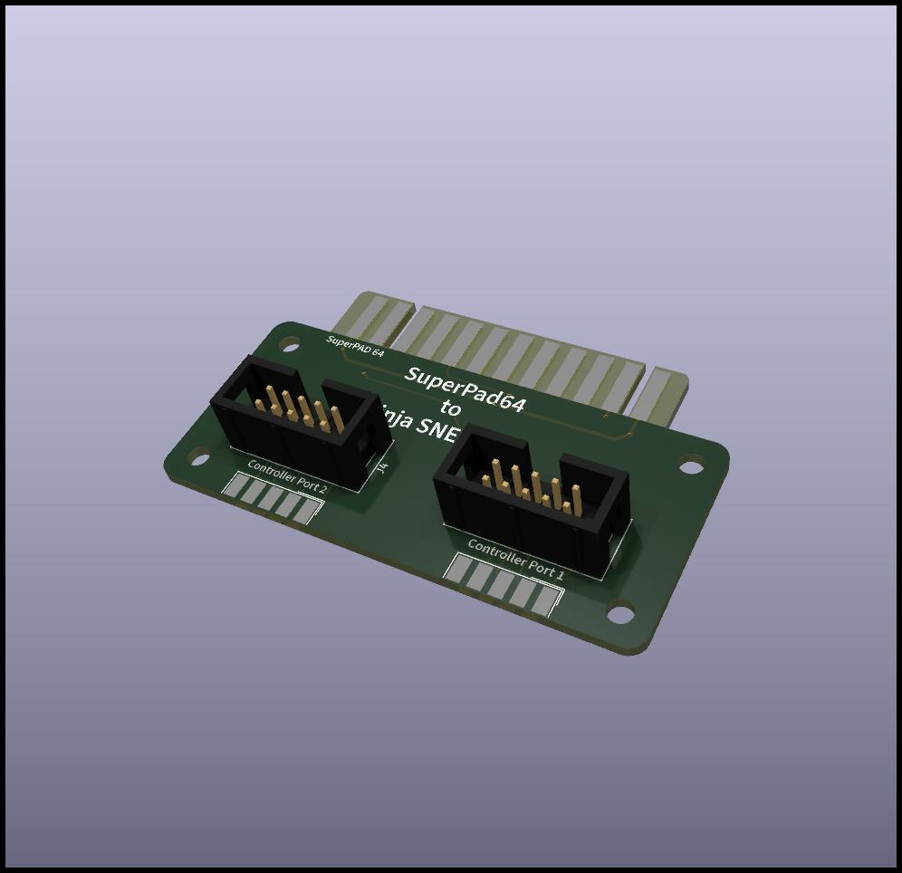
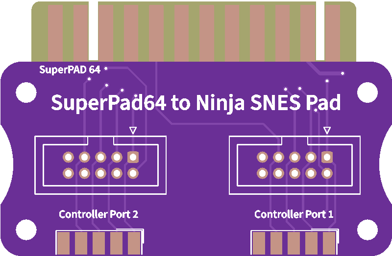

Mit diesem Adapter kann man ein SuperPad64 an den beiden Joystick Ports anschließen und als Ninja SNES Pad verwenden. Für C64/C128 können die Stecker direkt auf der Platine montiert werden, für andere Computer via zwei Flachbandkabel.
 
| Komponente | Anzahl | Preis | Anbieter |
| Platine | 1 | €1.00 | |
| D-Sub-9 Buchse | 2 | €0.40 | Reichelt |
| 2x5 Stiftleiste mit Rahmen | 2 | €3.02 | Reichelt |
| M3 16mm Abstandhalter Buchse/Buchse | 4 | €0.08 | Reichelt |
| M3 Schraube | 4 | €0.04 | Reichelt |
| nur Platine | €1.00 | ||
| Bausatz | €4.54 |
| Komponente | Anzahl | Preis | Anbieter |
| 9 poliges Flachbandkabel, 1m | 0.3 | €0.35 | Reichelt |
| 2x5 Buchsenleiste für Flachbandkabel | 2 | €0.16 | Reichelt |
| D-Sub-9 Buchse für Flachbandkabel | 2 | €1.62 | Reichelt |
| Bausatz | €2.13 |